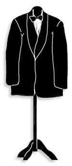
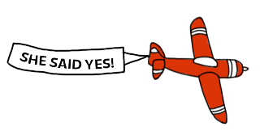
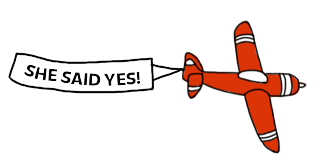

ZKUŠEBNÍ PROVOZ!
Informace ještě nejsou finální!
Informace ještě nejsou finální!
Lenka & Martin
Máme se rádi a tak jsme se rozhodli, že se vezmeme. A to již za:
Pokud patříte mezi ty šťastné, kteří ve svatebním oznámení našli i pozvánku na hostinu, rádi bychom vás viděli na našem obřadu. Pokud se na vás už nedostalo, nezoufejte. Máme vás rádi, někde jsme si však hranice museli nastavit.
Svatební obřad i hostina proběhnou v Hotelu Dam v Košické Belé (Google mapy tento hotel zobrazují pod názvem Hotel Belá). Dejte si při příjezdu pozor, dole u silnice je ještě jeden hotel, tam ale obřad nebude.
V případě jakýchkoliv dotazů nezodpovězených na této stránce nás kontaktujte, například na emailu svatba@vecerovi.com.

Pěkné šaty si nevěsta vybrala!
I ženich bude fešák!
Prosíme všechny svatebčany, aby své ošatění přizpůsobili alespoň částečně tomuto pro nás významnému dni.
Svatba bude laděna do levandulova (světle fialová). Bylo by milé, pokud byste svým oblečením nebo alespoň doplňky s touto barvou ladili.
Dámy prosíme, aby vynechaly šaty podobné svatebním, zejména bílé.

Květiny jsou hezkým darem, ale s ohledem na množství ostatních květin ve výzdobě a naším plánovaným odchodem na svatební cestu, bysme si je ani nemohli užít. Proto je prosím nenoste.
Únos nevěsty, chomout, koule na noze a podobné "zvyky" se mohou zprvu jevit jako dobrý nápad, ale negativně naruší celý průběh svatebního dne způsobem, který bychom si nepřáli. Proto i toto prosíme vynechejte.
V některých krajích koncept zcela cizí, ale na Slovensku tradiční. Jedná se o typický půlnoční tanec východního Slovenska, který probíhá po půlnoci.
Nevěsta se převleče ze svatebních šatů a po zahájení tradiční hudby budou mít přítomní pánové, páry i celé rodiny jedinečnou možnost si zatančit s nevěstou. Případný zájemce nejdříve vloží příspěvek pro novomanžele do klobouku a pak může tančit s nevěstou. Na upomínku pak obdrží malý dárek.

Cestujícím z Brna doporučujeme použít jižní trasu (Brno - Bratislava - Nitra - Zvolen - Lučenec - Rimavská Sobota - Rožňava - Košice). Tato cesta bez dlouhých zastávek trvá kolem 6 hodin. Pokud vyrazíte v 5:30 ráno, měli byste vše stihnout s dostatečnou časovou rezervou.
Pokud přijedete již v pátek, můžete využít některý z penzionů přímo v Košicích. Dřívější ubytování v hotelu Dam není možné, protože tam v pátek probíhá jiná svatba.
Pro svatebčany z blízka i z dálky zajišťujeme ubytování přímo v hotelu Dam. Ubytování bude možné od 12:00. Po probdělé noci bude připravena snídaně. Pokoje pak bude nutné opustit do 12:00 následujícího dne.

S ohledem na plánovanou výstavbu uvítáme jakýkoliv finanční příspěvek na stavební materiál. Jeho orientační ceny můžete vidět v tabulce níže. Každého, kdo přispěje pak rádi pozveme na kafíčko do našeho nového domečku. Koupě vázičky a bytových doplňků by byla nevhodná, neboť si ještě ani sami nejsme jisti vnitřním uspořádáním a stylem našeho nového bydlení. Nehledě na fakt, že bychom takové předměty neměli kam dát, protože ten domeček ještě nemáme.

Předpokládaný začátek hostiny je ve 16:00. I když bude před obřadem zajištěno drobné občerstvení, doporučujeme se ještě zlehka naobědvat.

Potvrďte nám prosím svoji účast do 18.6.2014 na email svatba@vecerovi.com. Děkujeme!
 
